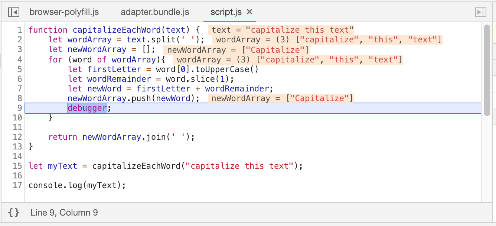
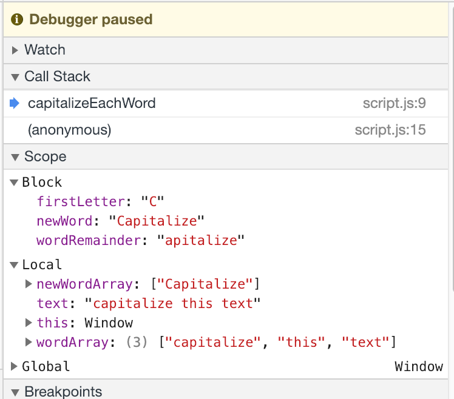

Core Concept: Debugging Techniques
Anytime we write code, we expect to encounter errors. In code, we call errors "bugs" and we call the process of tracking down and fixing errors "debugging". These bugs can come from syntax errors (when we misplace a comma, semicolon, brace, etc.) or from logical errors (when we make a mistake in calculating data or accessing a variable). Syntax errors are often the most frustrating for new developers because they consist mainly of things that are difficult for the untrained eye to spot. We have great tools for helping us find syntax errors, and once we get used to a language, those errors are not nearly as frustrating as they are to begin with. However, we still face the tricky task of figuring out our logical errors. Logical errors often require a more nuanced approach to debugging.
The process (and art) of debugging is enough to fill an entire book on its own, but we will review some methods that will often help find and fix bugs in our code.
Always Look at the Console
Whenever something isn't working properly in our JavaScript, we should always open up the developer tools in whatever browser we're using and check out the JavaScript console. The console will usually show what errors have been triggered by the page, and they will often give us a specific filename and line number where the error has been found. The console is an incredibly useful tool for developing JavaScript, so don't forget to consult the console (and our other developer tools) whenever something goes wrong.
Syntax Errors
Syntax errors consist of errors that are caused by some bad text in our code. Here are some common syntax errors:
let myString = 'Some text here; // Syntax error: no closing quote.
let myArray = [1, 2, 3,]; // Syntax error: trailing comma in Array definition.
if (x < 12) {
console.log(x);
// Syntax error: conditional statement has no closing brace.
These errors are annoying, but they tend to be the easiest to fix.
Check the Console
Like the tip above says, we always begin by checking the console. In the case of syntax errors the console will usually lead us to the specific file and line number, often with a helpful link. Sometimes syntax errors actually exist on the line before the one that triggers the error, so be sure to look around the line noted in the console if we don't find the error right away. Here are some tips for where to look to resolve syntax errors:
- Look on the line (or lines) before the one indicated in the console. For many syntax errors they register on the line after the missing quote, semicolon, etc.
- When the console indicates the last line of the file, look closely at the curly braces and how we've closed all of the code blocks.
- Go through and fix up all of our indentation and spacing. We often find syntax errors when we clean up our style, and lining up our code blocks helps figure out where we've forgotten to close things.
Prevent the Error
If we use tools like linters in our editors, we can be alerted to syntax errors before we see them in the browser. Sometimes if we see a line number indicated in an error in the JavaScript console we can return to our editor and notice a warning or error that will help track down the error. Using tools in our editor to alert us to the simplest syntax errors is a great way to avoid needless frustration. Anticipate that everyone makes typos and mistakes, so it's no shame to rely on tools to help us discover those bugs.
Logical Errors
Logical errors are much more difficult to track down and fix. They involve a mistake in our logic that leads to an incorrect value or some erroneous logical flow. Because these errors do not trigger syntactical errors, and often do not trigger any error at all in the JavaScript interpreter, they can be very difficult to track down and fix.
The first step to fixing any bug of this sort is to reproduce the error. It is impossible to fix a bug that we cannot reproduce, and if we cannot reproduce a bug then we can never verify a fix. If the error happens every time, then we are lucky. The toughest bugs to fix are those that only show up in very specific (and possibly rare) circumstances.
When working to reproduce a bug, try to follow these steps:
- Note exactly what happened to cause the bug.
- Come up with a set of inputs or steps that lead to the bug and write them down.
- Work with a colleague to have them reproduce the bug on their own using the steps outlined above.
- If it is impossible to reproduce the bug, be sure to capture as much information about the system and actions whenever the bug does occur.
Remember: If we cannot reproduce a bug then we cannot fix the bug.
Once we can make a bug happen again, we can begin to track down a fix.
Console Logging
Throughout the code in this book we have used the console.log() command to output information to the JavaScript console. This is a valuable tool that can allow us to emit messages to the JavaScript console to track the movement of information and logic in our programs. We can use console.log() to help verify that things we can't otherwise "see" are happening. Here is an example:
let maxNum = 20;
for (let i = 1; i<=20; i++) {
if (i % 2 === 0 ) {
console.log(`${i} is even`);
// additional program logic
} else {
console.log(`${i} is odd`);
// additional program logic
}
}
In the example above, the console.log() command is used to ping some information out to the console that we can use to verify our conditional is working properly. If we start seeing messages saying things like "3 is even" then we know that something is wrong.
Debugger
When console.log() is not enough, we can use the JavaScript Debugger, which exists in the developer tools for every major browser. When we use the debugger, we invoke a "breakpoint", which is like putting a big stop sign in our code. When the JavaScript interpreter hits the breakpoint, it stops and "freezes time" in the execution of the code. This can be very useful because we can then look at all the values of the code at that moment in the execution. This is extremely helpful in figuring out what went wrong.
Exactly how this works will vary just a little bit from browser to browser. Below I've linked to suitable tutorials covering the developer tools in all of the major browsers. But by way of an example, consider this:
function capitalizeEachWord(text) {
let wordArray = text.split(' ');
let newWordArray = [];
for (word of wordArray){
let firstLetter = word[0].toUpperCase()
let wordRemainder = word.slice(1);
let newWord = firstLetter + wordRemainder;
newWordArray.push(newWord);
debugger;
}
return newWordArray.join(' ');
}
let myText = capitalizeEachWord("capitalize this text");
console.log(myText);
That code snippet has a debugger command in the for loop within the capitalizeEachWord() function. This will freeze the execution of the code like this:

Debugger Stopped at Breakpoint
In the image above we can see that the debugger has stopped at the line with the debugger command. This has caused the JavaScript debugger in Chrome Devtools to show us the current values of the variables in use around this line of code. We can take a closer look at these values in the "scope" panel:

Debugger Scope Panel
In the "scope" panel we can see the values of the variables available at the moment that the debugger line has been executed. We could alter these values using the JavaScript console and we can use the big "play" button at the top of the debugger window to continue executing code. Since our debugger command is in a for loop, it will pause the program each time it executes. In this way, we can watch the values change on each iteration of the for loop.
Learn About Dev Tools
Although we can use the debugger command in pretty much any browser, there is always a danger that we could forget to remove that line from our code after we've figured out the problem. This is fairly common, and, as a result, developers tend not to use the `debugger` command to set a breakpoint.
Every major browser provides developer tools of some kind, and these all allow us to set breakpoints by clicking on the line number in the code view within the developer tools. Setting breakpoints using the interface in our browser's developer tools is safer because we avoid making any changes directly to our code. It allows us to quickly set and remove breakpoints as we try to find and fix bugs. Consult the resources listed below for more information about how to get the most from our debugging tools.
Additional Resources
The amazing developers and community of people who make and use different tools to help with development and debugging also create a lot of educational resources. Check out these resources for more information about how to debug code.
Suitable for Beginners
Chrome
- Chrome Devtools Overview
- Get Started Debugging JavaScript with Chrome Developer Tools
- Pausing Code Execution With Breakpoints
Firefox
MS Edge and IE
- F12 Devtools Guide (MS IE and Edge)